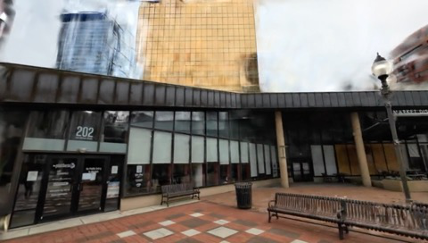
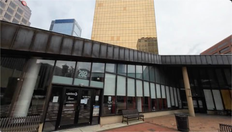

GaussFusion
简单摘要
真实感 3D 重建和新颖视图合成是计算机视觉中的基本问题，在虚拟现实、自动驾驶和机器人技术中都有应用。为了解决这些限制，有几种方法探索了利用生成先验通过生成密集的新颖视图图像来增强 3D 重建。

真实感 3D 重建和新颖视图合成是计算机视觉中的基本问题，在虚拟现实、自动驾驶和机器人技术中都有应用。为了解决这些限制，有几种方法探索了利用生成先验通过生成密集的新颖视图图像来增强 3D 重建。
核心创新
第一，我们提出了一种通过几何信息视频生成来改进野外 3D 高斯泼溅 (3DGS) 重建的新方法。
第二，与之前仅限于单个重建管道的基于 RGB 的方法不同，我们的方法引入了几何信息视频到视频生成器，该生成器可以跨基于优化和优化的 3DGS 渲染进行细化。
第三，我们进一步引入了一个工件合成管道，可以模拟不同的退化模式，确保鲁棒性和泛化性。
技术细节
与之前仅限于单个重建管道的基于 RGB 的方法不同，我们的方法引入了几何信息视频到视频生成器，该生成器可以跨基于优化和优化的 3DGS 渲染进行细化。给定现有的重建，我们渲染一个编码深度、法线、不透明度和协方差的高斯基元视频缓冲区，生成器对其进行细化以产生时间连贯的、无伪影的帧。3D 高斯泼溅 [25] 已成为高质量重建和渲染的流行表示。


$$ \mathbf{C}(\mathbf{u}) = \sum_{i=1}^{N} \mathbf{c}_i' \gamma_i \prod_{j=1}^{i-1} (1 - \gamma_j) $$
这条公式定义了论文中的一个核心计算关系。阅读时可以先确认左侧要得到的结果，再看右侧由 C、u、N、c 如何共同构成这个结果。
$$ \mathcal{L} = (1 - \lambda) \mathcal{L}_{L_1}(\mathbf{C}, \mathbf{C}_{\text{gt}}) + \lambda \mathcal{L}_{\text{D-SSIM}}(\mathbf{C}, \mathbf{C}_{\text{gt}}). $$
这条公式定义了论文中的一个核心计算关系。阅读时可以先确认左侧要得到的结果，再看右侧由 L、lambda、L、C 如何共同构成这个结果。
$$ x_t = t x_1 + (1-t)x_0, $$
这条公式定义了论文中的一个核心计算关系。阅读时可以先确认左侧要得到的结果，再看右侧由 t、t 如何共同构成这个结果。
$$ \mathcal{L} = \mathbb{E}_{x_0, x_1, c, t} \left[\|u_\theta(x_t, c, t) - v_t\|^2\right], $$
这条公式定义了论文中的一个核心计算关系。阅读时可以先确认左侧要得到的结果，再看右侧由 L、mathbb、E、c 如何共同构成这个结果。
$$ \mathcal{G} = \{\mathbf{C}, A, D, \mathbf{N}, \mathbf{U}\}, $$
这条公式定义了论文中的一个核心计算关系。阅读时可以先确认左侧要得到的结果，再看右侧由 G、C、A、D 如何共同构成这个结果。
$$ \mathbf{N}(\mathbf{u}) = \operatorname{normalize}\!\left(\partial_u \mathbf{P}_{\text{cam}} \times \partial_v \mathbf{P}_{\text{cam}}\right), $$
这条公式定义了论文中的一个核心计算关系。阅读时可以先确认左侧要得到的结果，再看右侧由 N、u、normalize、left 如何共同构成这个结果。
$$ \operatorname{concat}(\mathbf{z}_{\mathbf{C}}, \mathbf{z}_{A}, \mathbf{z}_{D}, \mathbf{z}_{\mathbf{N}}, \mathbf{z}_{\mathbf{U}}) \in \mathbb{R}^{\frac{W}{8} \times \frac{H}{8} \times 5C \times \frac{T}{4}}. $$
这条公式定义了论文中的一个核心计算关系。阅读时可以先确认左侧要得到的结果，再看右侧由 concat、z、C、z 如何共同构成这个结果。
实验结论
实验主要验证：我们在常见的小说视图综合基准上评估我们的方法。结果上，在下文中，最佳结果突出显示为第一颜色Fst、第二颜色Snd 和第三颜色Trd。



5.1 结果
实验主要验证：我们首先评估纯渲染细化、小说视图合成的性能，如表所示。结果上，GenFusion 和 ExploreGS 尽管利用了视频扩散框架，但与我们的 GP 缓冲区和次优调节策略相比，由于调节信号不足，性能较低。
5.2 消融研究
实验主要验证：根据 tab:ablation ，添加几何模态（深度、法线、alpha、协方差）可以持续提高渲染精度和感知质量。结果上，如选项卡：消融（第 2 行和第 3 行）所示，用简单的卷积融合层（无 GA）替换我们的 GA 会导致收敛速度较慢，调节和目标结构之间的几何对齐也较弱。
理解评价
如果把这篇论文放回问题背景里看，它真正的价值在于：我们提出了一种通过几何信息视频生成来改进野外 3D 高斯泼溅 (3DGS) 重建的新方法。这说明作者不是只补一个局部模块，而是在重新组织问题该怎样被解决。
最能支撑这个判断的，还是实验给出的证据：减轻常见的 3DGS 伪影，包括由相机姿势错误、不完整的覆盖范围和嘈杂的几何初始化引起的漂浮物、闪烁和模糊。换句话说，这些设计并不只是概念上更完整，而是实实在在改变了最终结果。
当然，它离真正成熟的方案还有距离：我们在 Supp 中讨论我们的局限性和未来的工作。后续更值得继续推进的方向，是 同时提升效率、泛化能力以及在更复杂场景下的稳定性。